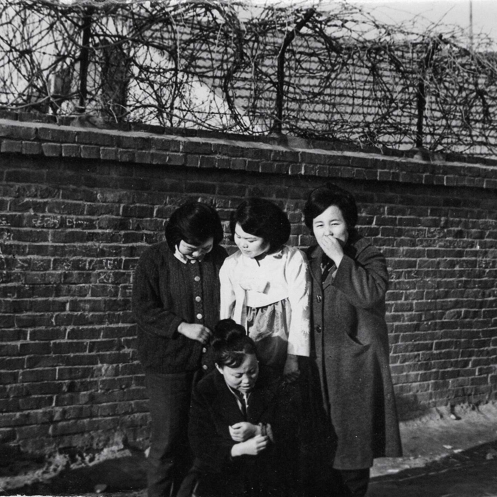
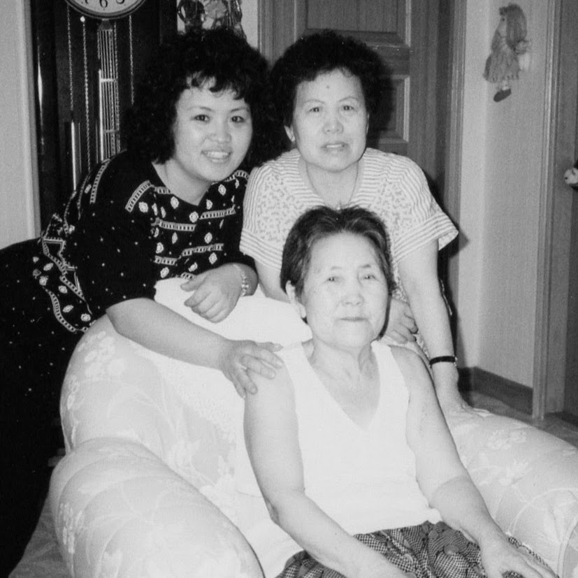

Grandma Kim (the wife of 황운학), was the envy of her neighbors.
She was that bride from a big city to the north, 평양 (平壤)1
Married to a well to do merchant.
She would wear the latest fashion, 양장2 (洋裝 or西服) instead of the traditional 한복 most women wore.
Grandpa and Grandma were landowners and business minded persons.
They owned orchards, Grandpa would venture out to big cities to acquire new items
For they operated 협성 상회 (協成商会), a local sundry shop as well as a branch of 매일신문 (毎日新聞)
They welcomed their 8th child and only surviving son into the family.
He was to fill the void left by the death of their 3rd child, also a son.
(Their 3rd and 4th child only lived a month. a son (득원) and a daughter (현숙) Both developed respiratory illness after catching what seemed to be common cold)
Then quickly life got difficult for her and the family.
Her husband, developed acute appendicitis and passed away.
One hundred days after the birth of their son, at age 33.3
She went from a landowner to serf within 3 to 4 years as communism replaced freedom and free market.
She escaped North Korea, with the help from her relatives. Link to details of the escape
She settled in the island of 진도.4
To make a living, she would travel to 목포시, roughly 15 miles to the north, purchase items that she would sell in an open-air market.
However, after seeing the local women working side by side with men, and not wanting that for her daughters, she moved and joined her relatives in 인천.

My earliest memory is that she owned a 슈퍼마켓, in the 동인천 area.
She would always treated me kindly and she seemed angelic to me.
However, through her smiles, I could tell she always carried a tinge of sadness.
By the time I was born, she had been a widow for nearly 25 years and she endured abrupt change in fortune and had escaped to South with just the family.
Her faith in Christ carried her through.
She seemed frail but she was a strong person.
I remember we were getting ready to leave for 김포공항.
She came and didn’t say much, and we sensed her sadness.
I recall, she had brought some apples for our journey to America.
My mom’s sisters took turn in taking care of Grandma Kim.
Met her again in 1990, because my aunt 현덕 had taken good care of her, she looked young and healthy, even as she approached 80s.
She looked more vibrant and seemed at peace.

When she passed away on November 1999, all of the children had gathered by her side.
She had asked for some 감 or persimmons, her favorite
The store had closed by then, told her that we would get her some in the morning.
She did not make it to morning.
At one time she was among the happiest and most blessed women, according to my mom
Most, if not all, of her material, worldly possession was taken and also her husband.
She would live nearly 60 years alone.
But she raised 4 daughters and a son to adulthood, married them to fellow North Koreans.
Planted in them a faith in Jesus Christ.
She taught us by example, for she lived an angel-like life and we have a strong faith that she is united with her husband and the rest of the family.
My Father and My Mother Family Diagram
A copy of abbreviated family record, link
Footnotes
https://ko.wikipedia.org/wiki/%ED%8F%89%EC%96%91%EC%8B%9C?oldformat=true↩︎
Son was born on 7/1 and grandpa passed away on 10/27↩︎
3rd largest island in Korea, off the Southwest coast. Roughly 1/2 the size of Singapore↩︎